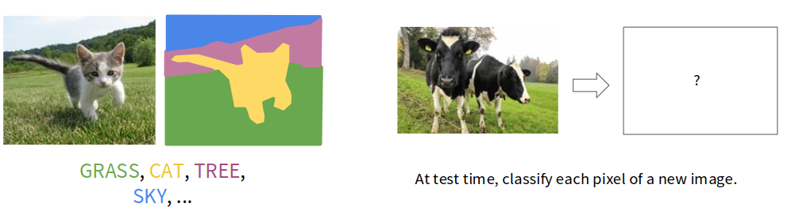
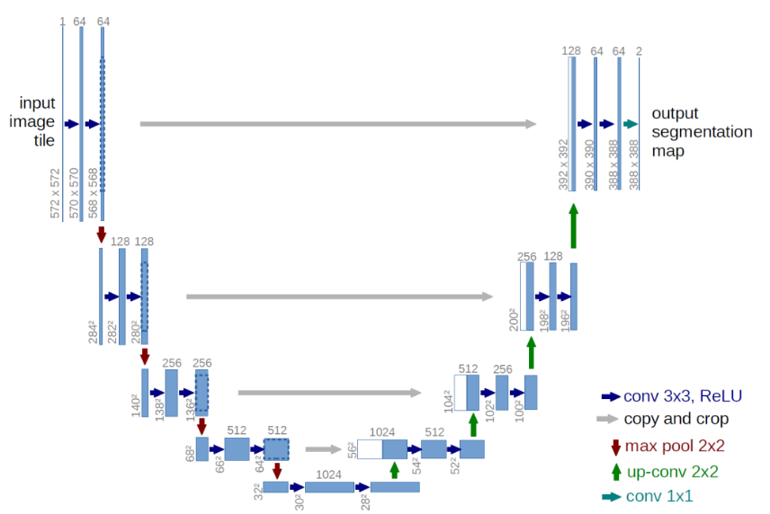

Deep Learning
Segmentación semántica
Noé Sámano
Objetivos
Al terminar esta clase podrás…
Explicar cómo se asigna una clase a cada píxel.
Comparar ventanas deslizantes y redes totalmente convolucionales.
Calcular un ejemplo de convolución transpuesta.
Explicar cómo U-Net combina contexto y detalle espacial.
Segmentación semántica · Stanford CS231n Una categoría por píxel Clasificar Cielo Gato Pasto De ventanas locales a redes totalmente convolucionales y U-Net.
El problema La segmentación semántica asigna una clase a cada píxel 
Entrada: imagen de 3 × H × W ; objetivo: máscara de H × W . Cada etiqueta indica una clase semántica : gato, vaca, cielo o pasto. Datos de entrenamiento emparejados: para cada imagen,
Ventana deslizante Un píxel aislado necesita contexto ¿Caballo o pasto? El color no revela el objeto. El píxel central no describe por sí solo la región a la que pertenece. El contexto permite interpretar bordes, textura y forma. Ventana deslizante Una ventana clasifica el píxel central CNN Clase del centro: caballo Extraer un parche alrededor de cada posición. Aplicar la CNN y asignar su predicción al píxel central. Ventana deslizante Las ventanas superpuestas repiten cómputo Imagen completa Recortar Aplicar la misma CNN Clase del centro A caballo B caballo C pasto Mismos pesos, tres pasadas. Las zonas compartidas se procesan de nuevo en cada parche.
Punto de control El contexto mejora la predicción ¿Por qué usar ventanas superpuestas resulta costoso?
Porque cada imagen necesita una sola etiqueta. Porque regiones compartidas se procesan repetidamente. Porque el contexto impide reconocer objetos. B. Las ventanas vecinas repiten operaciones. A confunde clasificación con segmentación; C invierte el papel del contexto, que ayuda a reconocer la clase.
Redes convolucionales La CNN comparte características 3 × H × W Conv Conv Conv C clases por píxel D × H × W C × H × W H × W Una red formada solo por capas convolucionales, sin reducir la resolución, permite predecir todos los píxeles a la vez.
Red totalmente convolucional Una FCN produce un mapa de clases 3 × H × W Conv Conv Conv C clases por píxel D × H × W C × H × W H × W C indica el número de clases; D, el número de canales intermedios. Una FCN genera C puntuaciones en cada posición. argmax sobre las clases convierte C × H × W en H × W.Problema: las convoluciones a la resolución original de la imagen resultan muy costosas.Red totalmente convolucional La red reduce y recupera la resolución La red combina convoluciones, reducción y ampliación de resolución.
Entrada 3 × H × W Predicción H × W
Punto de control La salida necesita recuperar detalle ¿Qué problema resuelve el decodificador?
Reconstruir una representación espacial de mayor resolución. Asignar una sola categoría a toda la imagen. Recuperar exactamente todos los valores eliminados por pooling. A. El decodificador aumenta la resolución para predecir por píxel. B describe clasificación global; C no está garantizado: pooling pierde información.
Ampliación sin aprendizaje El vecino más cercano replica valores 1 2 3 4 Entrada 2 × 2 Salida 4 × 4 1 1 1 1 1 2 2 2 2 2 3 3 3 3 3 4 4 4 4 4 Cada valor llena un bloque de 2 × 2; no se aprenden valores nuevos.
Ampliación sin aprendizaje Insertar ceros aumenta el tamaño del mapa 1 2 3 4 1 0 2 0 0 0 0 0 3 0 4 0 0 0 0 0 Entrada 2 × 2 Salida 4 × 4 con ceros Los valores originales quedan en posiciones separadas. Los sitios nuevos se inicializan en cero. Max unpooling Las posiciones de los máximos guían la ampliación 1 2 6 3 3 5 2 1 1 2 2 1 7 3 4 8 5 6 7 8 Pooling: guardar índices Resto de la red 1 2 3 4 0 0 2 0 0 1 0 0 0 0 0 0 3 0 0 4 Unpooling: reutilizar índices Los valores intermedios pueden cambiar. Guardar la ubicación de cada máximo durante el pooling. Colocar los valores del decodificador en esas ubicaciones; el resto queda en cero. Convolución · repaso Una convolución combina regiones con filtros Filtro 3 × 3 · stride 1 · padding 1. P indica padding, no un valor fijo.
P P P P P P P P P P P P P P P P P P P P Entrada 4 × 4 + padding (P) Salida 4 × 4 Filtro 3 × 3 Producto punto Avanzar una celda Cada salida es un producto punto entre el filtro y una región. Al mover una posición el filtro, se produce la siguiente salida. Convolución con stride El stride permite reducir la resolución Filtro 3 × 3 · stride 2 · padding 1. P indica padding, no un valor fijo.
P P P P P P P P P P P P P P P P P P P P Entrada 4 × 4 + padding (P) Salida 2 × 2 Filtro 3 × 3 Producto punto Avanzar dos celdas El filtro avanza dos posiciones en la entrada por cada salida. Los pesos del filtro se aprenden: es una reducción aprendible. Convolución transpuesta · paso a paso Cada entrada aporta un bloque a la salida Un canal · filtro 3 × 3 · stride 2. El recorte del borde aparece al final.
Cada entrada generará un bloque de 3 × 3.
Preparación ↺ ◀ 1 / 15 ▶
Convolución transpuesta · PyTorch
ConvTranspose2d convierte el mapa 2 × 2 en 4 × 4
Dimensiones del tensor: lote × canales × alto × ancho.
import torch
from torch import nn
x = torch .tensor ([[[[1. , 2. ], [3. , 4. ]]]])
capa = nn .ConvTranspose2d (
in_channels =1 , out_channels =1 , kernel_size =3 ,
stride =2 , padding =1 , output_padding =1 , bias =False )
print (capa (x ).shape )
capa.weight contiene los 9 pesos aprendibles del filtro.output_padding=1 ajusta el tamaño; no agrega ceros al resultado.
Punto de control Ampliar requiere definir la operación ¿Qué distingue a la convolución transpuesta?
Repite cada valor sin usar parámetros. Recupera automáticamente los valores previos al pooling. Acumula copias del filtro ponderadas por la entrada. C. Los filtros aprendidos generan contribuciones que se suman. A corresponde al vecino más cercano; B confunde una ampliación con la inversión exacta del pooling.
La arquitectura completa La red combina reducción y ampliación Reducción Pooling o conv. con stride Convoluciones con reducción y ampliación dentro de la red. Ampliación Unpooling o conv. transpuesta con stride Entrada 3 × H × W Predicción H × W U-Net U-Net conecta contexto y detalle 
Ronneberger et al. (2015).
U-Net · decodificador
Las conexiones de salto recuperan detalle espacial
1
1. Ampliar la resoluciónEl decodificador aumenta
el tamaño de los mapas.
2
2. Concatenar característicasLas conexiones de salto
aportan detalle espacial
del codificador.
Ronneberger et al. (2015).
La ampliación crea mapas de mayor resolución.
Las conexiones de salto aportan características de alta resolución.
Pérdida · entropía cruzada por píxel
La pérdida parte de la entropía cruzada
Punto de partida
−log p(clase correcta)
promedio sobre los píxeles
+ pesos por clase
las clases poco frecuentes
pesan más
+ pesos por píxel
U-Net: bordes entre
células que se tocan
Pérdida = promedio de peso(píxel) × (−log p)
Sin pesos: cada píxel es una clasificación y todos cuentan igual.Por clase: si el fondo ocupa casi toda la imagen, la red puede ignorar las clases pequeñas; se compensa, p. ej., con el inverso de su frecuencia.Por píxel: U-Net precalcula pesos mayores en las separaciones finas; no se aprenden.
En PyTorch: nn.CrossEntropyLoss(weight=pesos_por_clase)
Ronneberger et al. (2015), sección 3, pp. 4–5 .
Ideas clave La segmentación asigna clases sin distinguir instancias Amarillo: caballo · verde: pasto · azul: cielo · rojo: árbol. Ambos caballos comparten la clase “caballo”, incluso con traslape. Los árboles forman otra clase, junto con pasto y cielo. Referencias Fuentes y adaptación de esta presentación Material de origen Stanford CS231n. Lecture 9, diapositivas 33–64, 28 de abril de 2026. Fei-Fei Li, Ehsan Adeli, Durante, Johnson y Xiang. Sitio del curso .Farabet et al. Learning Hierarchical Features for Scene Labeling. TPAMI, 2013.Pinheiro y Collobert. Recurrent Convolutional Neural Networks for Scene Labeling. ICML, 2014.Arquitecturas y precisión técnica Uso de IA: traducción al español, adaptación didáctica y reconstrucción de diagramas con asistencia de IA. Las imágenes iniciales proceden del material de CS231n. Desde la diapositiva 5, la escena de caballos con traslape, los árboles y su máscara semántica ilustrativa se generaron con IA; no son anotaciones de un dataset. Las figuras reconstruidas son esquemáticas.